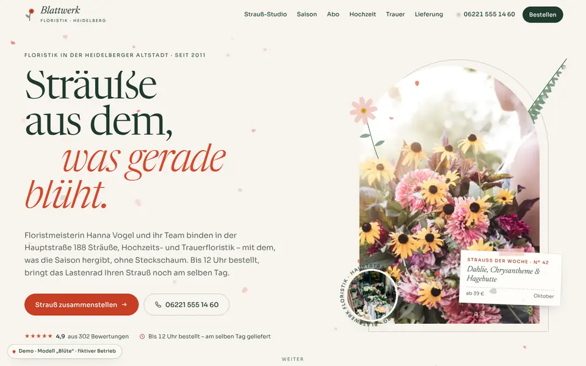
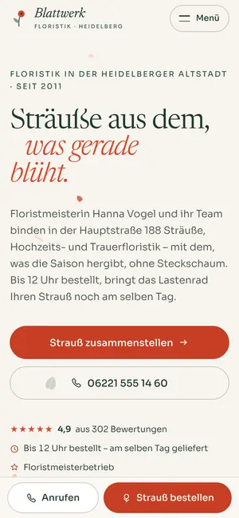

Case Study 29 / 30 · Kreativ & Handel
Blattwerk Floristik
Modell „Blüte“
Floristik-Seite mit Strauß-Konfigurator, Saisonkalender, Blumen-Abo und Liefergebiet-Check mit Bestellschluss.


Ausgangslage
Blattwerk Floristik ist ein erfundener Blumenladen in der Heidelberger Hauptstraße. Wer dort bestellt, will wissen, was gerade Saison hat, was ein Strauß kostet, ob der Laden liefert und ob die Bestellung noch heute ankommt. Die Seite soll diese Fragen direkt beantworten und Hochzeits-, Trauer- und Abo-Floristik als eigene Angebote zeigen.
Idee
Das Modell „Blüte“ ist botanisch-editorial: Tiefgrün, Blush, Mohn, Papier und Salbei, Newsreader kursiv für Überschriften und Sora für Text. Gepresste Blüten als SVG, Herbarium-Rahmen und Bogenmasken geben der Seite den Charakter eines Pflanzenbuchs. Im Hero fallen Blütenblätter auf Canvas und weichen dem Mauszeiger aus; die Hochzeitsstrecke läuft auf dem Desktop horizontal und gepinnt.
Was die Seite kann
- Strauß-StudioBlumen, Farbwelt und Größe wählen, der SVG-Strauß wächst live mit, Preis als Beispielrechnung, Kartentext als Vorschau; „Diesen Strauß anfragen“ füllt das Kontaktformular vor.
- SaisonkalenderMonats-Tabs mit Pfeiltasten, 24 Blüten-Icons mit Hauptsaison-Markierung, Jahresbalken je Blume, Filter „Nur Saisonblumen“ und Monatsempfehlung.
- Blumen-AboUmschalter wöchentlich, 14-tägig oder monatlich mit Preisübersicht, Monatsbetrag und nächstem möglichem Liefertermin.
- Liefergebiet-CheckPLZ eingeben oder Bezirk auf der SVG-Karte anklicken, die Seite zeigt Zone, Gebühr und Lieferfenster; ein Countdown läuft bis zum Bestellschluss um 12 Uhr.
- Laufband „Im Monat im Laden“, das aus dem Saisonkalender berechnet wird, und Leistungsliste mit Vorschaubild, das dem Cursor folgt.
- Live-Öffnungsstatus im Header und Kontakt, heutiger Tag in der Zeiten-Tabelle hervorgehoben.
Dein Betrieb
So eine Seite für dich?
Schreib mir kurz, was du anbietest und was deine Website leisten soll. Du bekommst eine ehrliche Einschätzung, was sie kostet und was sie dir bringen kann.
Projekt anfragen